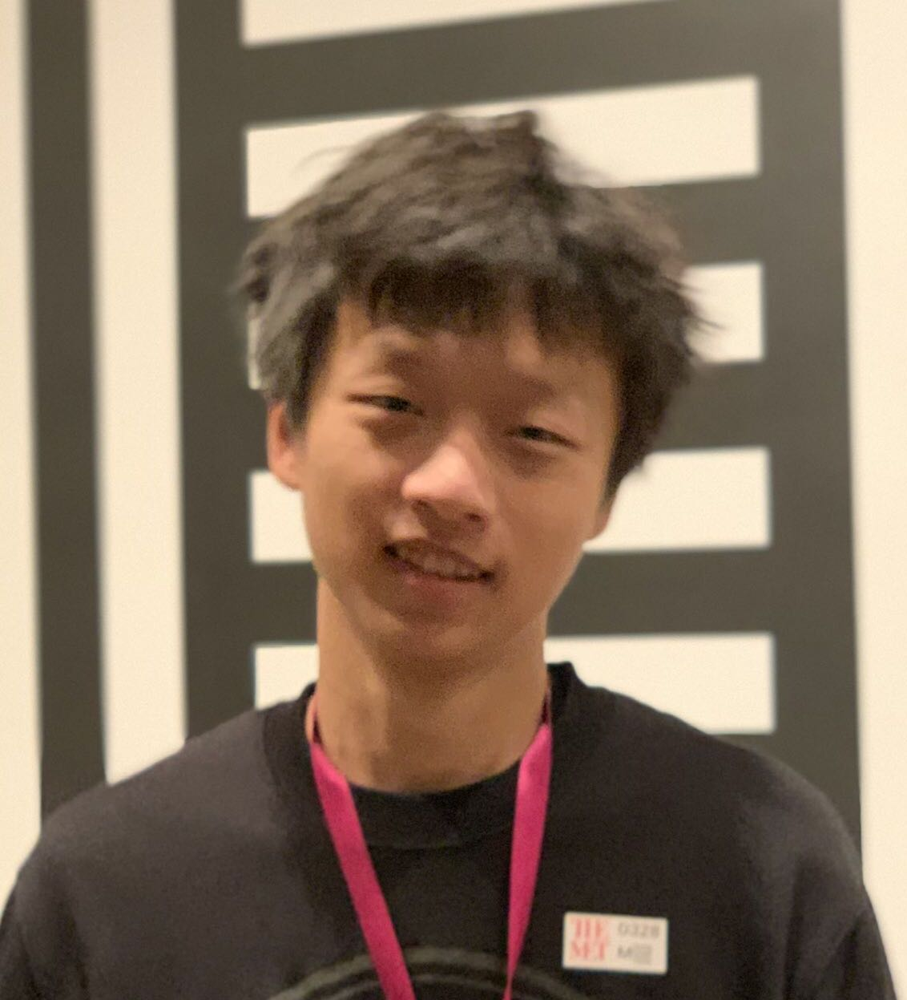
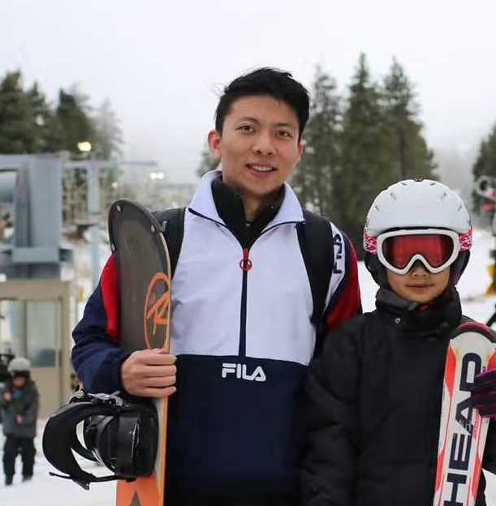

Who are we?
The Team
Joel Loo
My name is Joel Loo. I am a 4th year Cognitive Science major/Computer Science minor, interested in UX/UI design. I am our team's lead this quarter, and I hope that through fostering collaborative problem solving and interpersonal connections, our team will strive to succeed in our work. In my free time I enjoy going to music festivals and practicing graphic design!Sarah Gemperle
I'm a tools and utility team member, and a current 4th year studying Mathematics-Computer Science with a Business minor! Love learning new web-dev and application development technologies. I enjoy hanging out with friends, music, and travel!
Vincent Cannala
Colin Van Winkle
My name is Colin and I’m a 4th year CS major on the Tool & Utility team. As of lately I’ve taken an interest in web development. In my spare time I like to make music and play spikeball at the beach. :)
Charlotte Forgey-Jahn
Joshua Quan
I'm Joshua Quan, I'm one of the coders for the group. I'm a 3rd-year Computer Science major/Cognitive Science minor. I like to make small games in Unity and draw in my spare time!Kuo
I'm Kuo Liang, a 4th-year computer science student on the coder team. I like sleeping in my spare timeMuzhou li
I am Muzhou(Jim). I’m the co-lead of the team. I major in CE, and I’m interested in machine learning, the biggest fad in the industry over the past few years.

Tommy
I am Hanqing Zhang, a coder of the team. A fourth-year undergraduate majoring in CS. Nothing special, nothing new.
